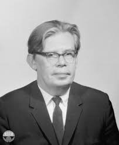
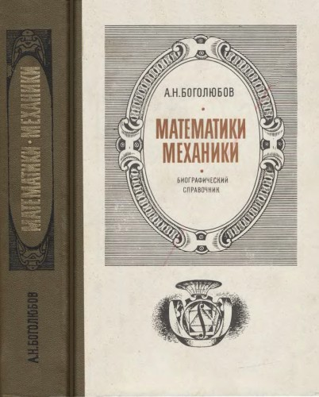
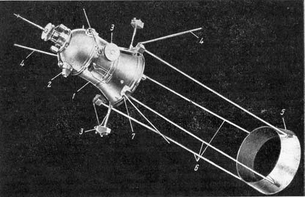
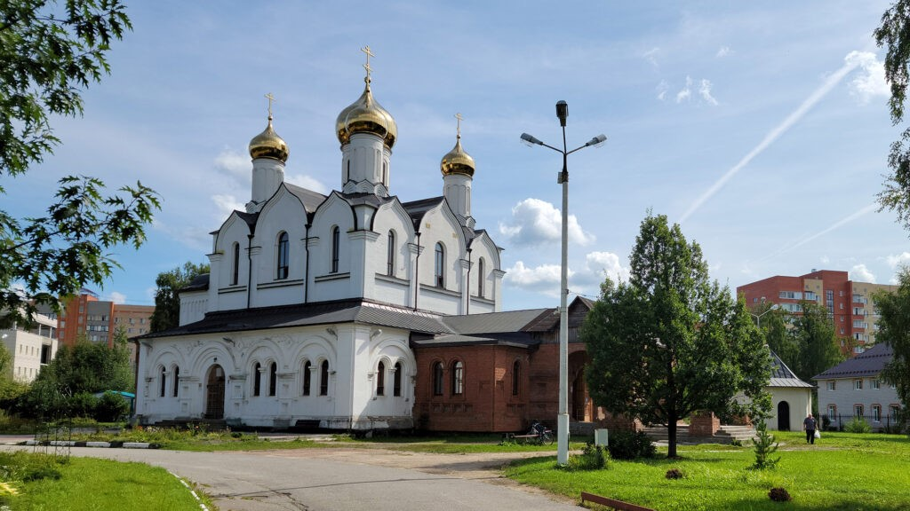

«Человек не может никого называть своим учеником, даже если был чьим-то наставником многие годы. А вот
наоборот можно сказать: этот человек — мой Учитель.»
Николай Николаевич Боголюбов — крупнейший ученый современности, основоположник фундаментальных
научных
направлений в математике, механике и физике. Под его непосредственным влиянием
сформировалась и развилась
современная математическая физика. Им создана принципиально новая область теории дифференциальных
уравнений
— теория нелинейных колебаний, положено начало применению в нелинейной механике методов с
ускоренной
сходимостью и создан метод интегральных многообразий.
Основоположник нелинейной механики:
Боголюбов считается одним из основателей нелинейной механики, что стало важным шагом в
развитии
теоретической физики.
Работа над квантовой теорией:
Он сделал значительный вклад в квантовую теорию, особенно в области неидеальных квантовых макросистем
и
сверхтекучести.
Сверхпроводимость:
Боголюбов разработал теорию сверхпроводимости, которая объясняет явление как форму
сверхтекучести
ферми-систем, что стало основой для дальнейших исследований в ядерной физике.
Математический аппарат:
Боголюбов создал математический аппарат, который стал стандартом для описания различных физических
явлений,
включая теорию гироскопических систем и механики космического полета.


Деятельность в ядерных исследованиях:
Как один из разработчиков атомного оружия, Боголюбов возглавлял математический отдел в
Арзамасе-16. С 1956 года
работал в Объединённом институте ядерных исследований в Дубне, где был директором с 1965
по 1988 год
.
Он также возглавлял Московский институт теоретической и прикладной математики и руководил кафедрой
квантовой
статистики и теории поля на физфаке МГУ.
Интересный факт:
Боголюбов обладал универсальной эрудицией, выходящей за рамки математики и физики. Он
был глубоко верующим
человеком и способствовал возвращению храма Похвалы Пресвятой Богородицы верующим в Дубне.
